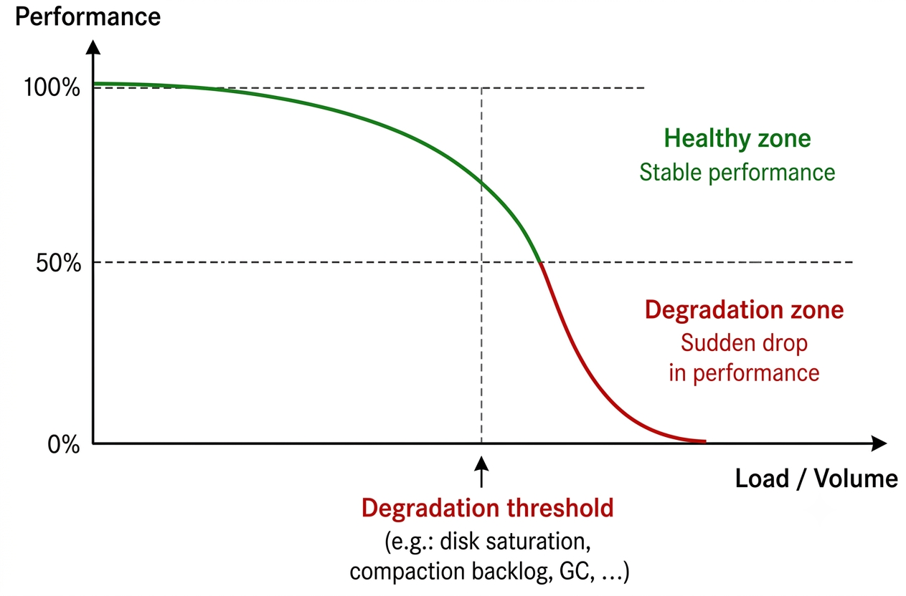

# Cassandra ... ## ... or not --- <!-- .slide: class="didascalie" --> ## What is <br />Cassandra? <a href="https://youtu.be/lmwxJQZAfLI" target="_blank"> <img src="./img/2-kaamelott-cassandre.png" style="width:50%"> </a> --- ## Database - Created by Facebook (2008) - Apache project (community ecosystem) - DataStax : main commercial player<br>(support, AstraDB, DSE, ...) --- <!-- .slide: class="decomposed" --> Database - <!-- .element: class="expanded focused" --><strong>Column-family oriented:</strong> - **1 family** : set of rows - **1 key per row** : simple or composite (n columns) - **Value(s) per key** : not queryable - **Fixed schema** : same structure for all rows --- <!-- .slide: class="decomposition" --> Database - Column-family oriented - <!-- .element: class="expanded focused" --><strong>Distributed:</strong> - **Partitioning** : Partition tolerance<br /><small>partition key in addition to primary key</small> --- <!-- .slide: class="didascalie" --> ## What does that mean?  --- <!-- .slide: class="decomposed" -->  --- <!-- .slide: class="decomposition decomposed" -->  --- <!-- .slide: class="decomposition decomposed" -->  --- <!-- .slide: class="decomposition decomposed" -->  --- <!-- .slide: class="decomposition" -->  --- <!-- .slide: class="decomposed" --> Database - Column-family oriented - <!-- .element: class="expanded" --><strong>Distributed:</strong> - Partitioning - <!-- .element: class="focused" --><strong>Multi-master</strong>: availability<br>Depending on partitioning, 1 master per partition <div class="img-container" style="width:50%"> <img src="./img/5-cap.png" style="width:50%;border-radius:5px" /> <div style="color:red;font-size:small;font-weight:bold;top:55%;left:41%;">Here ➜</div> </div> --- <!-- .slide: class="decomposition" --> Database - Column-family oriented - <!-- .element: class="expanded" --><strong>Distributed:</strong> - Partitioning - Multi-master - <!-- .element: class="focused" -->Trade-off <strong>Consistency</strong>/“Adjustable” latency --- <!-- .slide: class="decomposed" --> Consistency level - <!-- .element: class="expanded focused" --><strong>Minimum bound</strong>:<br>Data on 1, 2, or 3 nodes, or on all nodes --- <!-- .slide: class="decomposition" --> Consistency level - Minimum bound: 1, 2, 3, *ALL* - <!-- .element: class="expanded focused" --><strong>By quorum</strong>: depending on replication and nodes<br><small>Example: with replication factor 3 and 5 nodes, local quorum is 2</small> --- <!-- .slide: class="decomposed" -->  --- <!-- .slide: class="decomposition decomposed" -->  --- <!-- .slide: class="decomposition decomposed" -->  --- <!-- .slide: class="decomposition" -->  --- Database - Column oriented - Distributed - <!-- .element: class="expanded focused" --><strong>Write performance</strong>: - <small>Example: Uber</small> - <small>Tens of millions of requests/s</small> - <small>Petabytes of data</small> - <small>Hundreds of clusters (6 to 450 nodes)</small> --- <!-- .slide: class="decomposed" --> - <!-- .element: class="expanded focused" --><strong>CQL</strong>: SQL-like - Low barrier to entry for SQL users - Syntax and grammar validation tools (tests) ```sql INSERT INTO a_table(foo, bar, lorem) VALUES(1, 2, '..'); UPDATE a_table SET foo = 1 WHERE lorem = '..'; -- !upsert DELETE FROM a_table WHERE foo = 2; ``` --- <!-- .slide: class="decomposed decomposition" --> - CQL - <!-- .element: class="expanded focused" --><strong>Batch</strong>: Economies of scale - Reuse resources for multiple queries<br><small>Example : Reduce network round trips, I/O</small> - Guarantee atomicity <small>(si une seule partition)</small> - Not magic: do not generalize <small>(especially across multiple partitions)</small> ```sql BATCH INSERT INTO merchant(country, brand, ..) VALUES ('FR', 'IM', ..); INSERT INTO merchant(country, brand, ..) VALUES ('FR', 'EM', '..'); APPLY BATCH; ``` --- <!-- .slide: class="decomposition" --> - CQL - Batch - <!-- .element: class="expanded focused" --><strong>Conditional write</strong>: - `INSERT`<br><small>Example : Create a merchant only if new</small> --- <!-- .slide: class="decomposed" -->  --- <!-- .slide: class="decomposition" -->  --- - CQL - Batch - <!-- .element: class="expanded focused" -->Conditional write: - `INSERT` - <strong>`UPDATE`</strong><br><small>Example : Article versioning</small> --- <!-- .slide: class="decomposed" -->  --- <!-- .slide: class="decomposition" -->  --- - CQL - Batch - Conditional write - <!-- .element: class="focused" --><strong>"static" column</strong>:<br>shares the same value across <i>n</i> rows in a partition --- <!-- .slide: class="didascalie" --> ## And otherwise ...  --- <!-- .slide: class="decomposed" --> - <!-- .element: class="focused" --><strong>No transaction</strong>: atomic batch, idempotence --- <!-- .slide: class="decomposition decomposed" --> - No transaction - <!-- .element: class="focused" --><strong>Transformation on update</strong>:<br>only possible on counter or collection columns  --- <!-- .slide: class="decomposition decomposed" --> - No transaction - Transformation on update - <!-- .element: class="expanded" -->Multi-partition query - <!-- .element: class="focused" --><strong>Impossible for write operations</strong> --- <!-- .slide: class="decomposition decomposed" --> - No transaction - Transformation on update - <!-- .element: class="expanded" -->Multi-partition query - Impossible for write operations - <!-- .element: class="focused" --><strong>Strongly discouraged in batches</strong>:<br> prevents atomicity, coordinator contention --- <!-- .slide: class="decomposition decomposed" --> - No transaction - Transformation on update - <!-- .element: class="expanded" -->Multi-partition query - Impossible for write operations - Strongly discouraged in batches - <!-- .element: class="focused" --><strong>Strongly discouraged for reads</strong>:<br><tt>SELECT .. IN</tt> --- <!-- .slide: class="decomposition" --> - No transaction - Transformation on update - Multi-partition query - <!-- .element: class="focused expanded" --><strong>No relational query</strong>:<br><tt>JOIN</tt> or nested query - <small>Possible with other distributed/column-oriented DBs<br>(ex : ClickHouse, MongoDB)</small>  --- Cases where you really should <small>not</small> use it? - <!-- .element: class="focused expanded" -->Development - **Multi-filter search**: strict key order<br><small>Example : Store: Country/Brand/...</small> --- <!-- .slide: class="decomposed" -->  **Search by Country**: 👌 ```sql SELECT * FROM a_table WHERE Country = 'FR'; ``` --- <!-- .slide: class="decomposed decomposition" -->  **Search by Country and Brand**: 👌 ```sql SELECT * FROM a_table WHERE Country = 'FR' AND Brand = 'IM'; ``` --- <!-- .slide: class="decomposition" -->  **Search by Brand**: ❌ ```sql SELECT * FROM a_table WHERE Brand = 'IM'; ``` Cannot filter by `Brand` without `Country`. --- <!-- .slide: class="decomposed" --> Cases where you really should <small>not</small> use it? - <!-- .element: class="expanded" -->Development - <!-- .element: class="expanded" -->Multi-filter search - <!-- .element: class="focused" --><strong>Allow filtering</strong>: Client-side filtering; discouraged <blockquote>When your query is rejected by Cassandra because it needs filtering, you should resist the urge to just add <tt>ALLOW FILTERING</tt> to it.</blockquote> --- <!-- .slide: class="decomposed decomposition" --> Cases where you really should <small>not</small> use it? - <!-- .element: class="expanded" -->Development - <!-- .element: class="expanded" -->Multi-filter search - Allow filtering: <small>discouraged</small> - <!-- .element: class="focused" --><strong>Secondary index</strong>: generally discouraged <blockquote>Secondary indexes are tricky to use and can impact performance greatly.</blockquote> --- <!-- .slide: class="decomposition" --> Cases where you really should <small>not</small> use it? - <!-- .element: class="expanded" -->Development - <!-- .element: class="expanded" -->Multi-filter search - Allow filtering: <small>discouraged</small> - Secondary index: <small>generally discouraged</small> - <!-- .element: class="focused expanded" --><strong>Automatic denormalization</strong>: Materialized view<br><small>Virtual “tables” updated on every write</small> - <small><strong>Better performance than Secondary Index</strong>:<br>More stable since Cassandra 4<br>Should be limited to specific cases</small> ---  --- <!-- .slide: class="decomposed" --> Cases where you really should <small>not</small> use it? - <!-- .element: class="expanded" -->Development - <!-- .element: class="expanded" -->Multi-filter search - Allow filtering: <small>discouraged</small> - Secondary index: <small>generally discouraged</small> - <!-- .element: class="expanded" --><strong>Automatic denormalization</strong>: Materialized view<br><small>Virtual “tables” updated on every write</small> - <small>Better performance than Secondary Index</small> - <!-- .element: class="focused" --><strong>Write performance degradation</strong><br><small>(varies greatly depending on workload)</small> --- <!-- .slide: class="decomposed decomposition" --> Cases where you really should <small>not</small> use it? - <!-- .element: class="expanded" -->Development - <!-- .element: class="expanded" -->Multi-filter search - Allow filtering: <small>discouraged</small> - Secondary index: <small>generally discouraged</small> - Automatic denormalization: <small>discouraged as a general approach</small> - <!-- .element: class="focused expanded" --><strong>Application-level denormalization</strong>: complex - <small>Manually duplicate data across different tables</small> - <small>Retain the benefits of batching</small> --- <!-- .slide: class="decomposed decomposition" --> Cases where you really should <small>not</small> use it? - <!-- .element: class="expanded" -->Development - Multi-filter search - <!-- .element: class="expanded focused" --><strong>Range search</strong>: range query - The criterion must be part of the *clustering key* - A column can only be filtered if the previous one is also filtered (by equality) - A criterion cannot be added if the previous column is a range query --- <!-- .slide: class="decomposed decomposition" --> Cases where you really should <small>not</small> use it? - <!-- .element: class="expanded" -->Development - Multi-filter search - Range search - <!-- .element: class="expanded focused" --><strong>Heterogeneous distribution</strong>: depending on the use case - Reduced parallelism - I/O cache overflow - “A priori” partitioning<br>(vs rollover ElasticSearch); <small>Example: article/PDF</small> - Workaround using <i>synthetic sharding</i> --- <!-- .slide: class="decomposed decomposition" --> Cases where you really should <small>not</small> use it? - <!-- .element: class="expanded" -->Development - Multi-filter search - Range search - Heterogeneous distribution - <!-- .element: class="expanded focused" --><strong>Different ways of referencing the same data</strong> - <i>Read-before-update</i>: higher reads relative to writes - Trade-off dénormalisation<br><small>(application-level compensation, consistency/atomicity issues)</small> --- <!-- .slide: class="decomposed decomposition" --> Cases where you really should <small>not</small> use it? - <!-- .element: class="expanded" -->Development - Multi-filter search - Range search - Heterogeneous distribution - Different ways of referencing the same data - <!-- .element: class="expanded focused" --><strong>Driver quality</strong> ```java bind(Object... values) ``` --- <!-- .slide: class="decomposition" --> Cases where you really should <small>not</small> use it? - <!-- .element: class="expanded" -->Development - Multi-filter search - Range search - Heterogeneous distribution - Different ways of referencing the same data - Driver quality - <!-- .element: class="expanded focused" --><strong>Fixed read result ordering</strong> per table --- <!-- .slide: class="decomposed" -->  **Sort by Country**: ❌ <small>(partition order)</small> ```sql SELECT * FROM a_table ORDER BY Country DESC; ``` --- <!-- .slide: class="decomposed decomposition" -->  **Sort by Brand for a Country**: 👌 <small>(<i>clustering key</i> order)</small> ```sql SELECT * FROM a_table WHERE Country='FR' ORDER BY Brand DESC; ``` --- <!-- .slide: class="decomposed decomposition" -->  **Global sort by Brand**: ❌ <small>(multiple partitions by Country)</small> ```sql SELECT * FROM a_table ORDER BY Brand DESC; ``` --- <!-- .slide: class="decomposition" -->  **Sort by ID then Brand**: ❌ ```sql SELECT * FROM a_table WHERE Country='FR' ORDER BY ID DESC, Brand DESC; ``` --- <!-- .slide: class="decomposed" --> Cases where you really should <small>not</small> use it? - Development - <!-- .element: class="expanded" -->Operations - <!-- .element: class="expanded focused" --><strong>Complexity</strong>: - Backup - Periodic Anti-anthropy Repair - Incremental Repair <small>(mature depuis v4)</small> --- <!-- .slide: class="decomposition decomposed" --> Cases where you really should <small>not</small> use it? - Development - <!-- .element: class="expanded" -->Operations - <!-- .element: class="expanded" -->Complexity: - Backup, <small>Periodic Anti-anthropy Repair, Incremental Repair</small> - <!-- .element: class="focused" --><strong>Tool consistency</strong> <small>(e.g. inconsistent options)</small> --- <!-- .slide: class="decomposition decomposed" --> Cases where you really should <small>not</small> use it? - Development - <!-- .element: class="expanded" -->Operations - <!-- .element: class="expanded" -->Complexity: - Backup, <small>Periodic Anti-anthropy Repair, Incremental Repair</small> - Tool consistency - <!-- .element: class="focused" --><strong>Monitoring, sometimes cryptic logs</strong><br><small>(ex : slow query, despite tooling improvements since v4)</small> --- <!-- .slide: class="decomposition" --> Cases where you really should <small>not</small> use it? - Development - <!-- .element: class="expanded" -->Operations - <!-- .element: class="expanded" -->Complexity: - ... - Tool consistency - Monitoring, sometimes cryptic logs - <!-- .element: class="focused" --><strong>Unpredictability of options/use cases</strong><small>(ex : compaction/GC)</small><br><small>Tuning is difficult; several parameters often need to be adjusted at the same time rather than one at a time as usual</small> --- <div style="text-align:left"> <p></p> </div> <img src="img/15-plane.jpg" alt="Crash" style="position: absolute;width: 30%;bottom: -35%;right: 20%" /> --- <!-- .slide: class="decomposed" --> Cases where you really should <small>not</small> use it? - Development - <!-- .element: class="expanded" -->Operations - <!-- .element: class="expanded" -->Complexity: - ... - Monitoring, sometimes cryptic logs - <!-- .element: class="expanded focused" --><strong>Support / expertise</strong><br><small>(DataStax, Amazon Keyspaces, Instaclustr, ...)</small>: - <small>High cost</small> - <small>Value varies depending on needs</small> --- <!-- .slide: class="decomposed decomposition" --> Cases where you really should <small>not</small> use it? - Development - <!-- .element: class="expanded" -->Operations - <!-- .element: class="expanded" -->Complexity: - ... - Support / expertise <small>(Cost, variable value, ...)</small> - <!-- .element: class="expanded focused" --><strong>Documentation</strong>: extensive / sometimes contradictory - <small>Batch atomicity/isolation</small> - <small>Compaction depending on use case</small> - <small>Bulk load</small> --- <!-- .slide: class="decomposed decomposition" --> Cases where you really should <small>not</small> use it? - Development - <!-- .element: class="expanded" -->Operations - <!-- .element: class="expanded" -->Complexity: - ... - Documentation <small>(extensive / sometimes contradictory)</small> - <!-- .element: class="expanded focused" --><strong>Sizing</strong> - **High barrier to entry**:<br><small>Operational complexity is only truly worthwhile when multiple teams or applications share a cluster</small> --- <!-- .slide: class="decomposed decomposition" --> Cases where you really should <small>not</small> use it? - Development - <!-- .element: class="expanded" -->Operations - <!-- .element: class="expanded" -->Complexity: - ... - <!-- .element: class="expanded" --><strong>Sizing</strong> - High barrier to entry - <!-- .element: class="focused" --><strong>Physical/dedicated deployment recommended</strong>:<br><small>Cloud/Kubernetes are possible but further increase operational complexity</small> --- <!-- .slide: class="decomposed decomposition" --> Cases where you really should <small>not</small> use it? - Development - <!-- .element: class="expanded" -->Operations - <!-- .element: class="expanded" -->Complexity: - ... - <!-- .element: class="expanded" --><strong>Sizing</strong> - High barrier to entry - Physical/dedicated deployment recommended - <!-- .element: class="focused" --><strong>Failure recovery</strong> - **Commit log instability**: manual intervention --- <!-- .slide: class="decomposition" --> Cases where you really should <small>not</small> use it? - Development - <!-- .element: class="expanded" -->Operations - <!-- .element: class="expanded" -->Complexity: - ... - <!-- .element: class="expanded" --><strong>Sizing</strong> - ... - **Failure recovery** - Commit log instability - <!-- .element: class="focused" --><strong>Full disk</strong>: node restoration complexity --- - In a straight line, it goes very fast - Don't ask it to change direction - The slightest deviation is quickly costly --- <!-- .slide: class="decomposed" --> ## Things to experiment with … (non-exhaustive, depending on use cases) - ClickHouse - SyllaDB - Yugabyte - Kafka (forever retention) - MongoDB sharding (distributed write, server-side routing) - ElasticSearch --- <!-- .slide: class="decomposition" --> ## Things to experiment with … (non-exhaustive, depending on use cases) - ... - MongoDB sharding (distributed write, server-side routing) - ElasticSearch - “Classic” DBMS in a distributed flavour - Amazon RDS / Aurora, Google Cloud SQL, Azure CosmoDB - MySQL Cluster, PostgreSQL + Citrus --- <!-- .slide: class="didascalie" --> ## Questions? [@cchantep](https://www.linkedin.com/in/cchantep/)